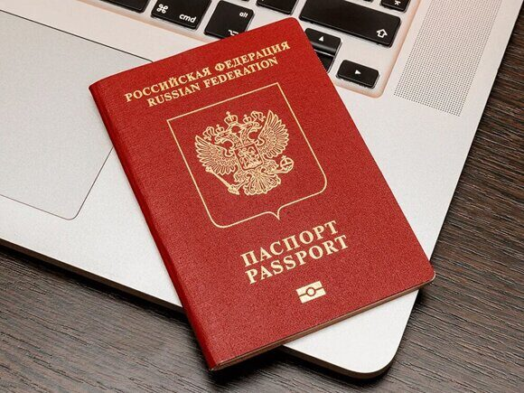

« НазадЗагранпаспорт через Госуслуги: пошаговая инструкция Получение заграничного паспорта – процедура, которая, казалось бы, должна быть простой и понятной. Однако на практике многие сталкиваются с трудностями, связанными с оформлением документов, сбором справок, очередями и недостатком информации. Портал государственных услуг «Госуслуги» призван значительно упростить этот процесс, предлагая удобный и эффективный способ подачи заявления и отслеживания его статуса. В данной статье мы подробно разберем все этапы получения заграничного паспорта через «Госуслуги», предоставим полезные советы, рассмотрим возможные сложности и приведем примеры из жизни, а также обратимся к релевантным нормативным актам. I. Подготовка к подаче заявленияПрежде чем приступать к оформлению заявления на загранпаспорт через «Госуслуги», необходимо подготовиться. Это включает в себя: 1. Проверку наличия подтвержденной учетной записи на портале «Госуслуги». Без подтвержденной учетной записи подать заявление невозможно. Подтверждение учетной записи можно пройти различными способами: через СМС-код, посетив МФЦ или используя электронную подпись. Уровень подтверждения должен быть не ниже «Стандартный». 2. Сбор необходимых документов: Список документов зависит от типа заграничного паспорта (старого образца или биометрического). В общем случае, потребуются:
3. Выбор места подачи заявления: После заполнения заявления на портале «Госуслуги» вам будет предложено выбрать удобное для вас отделение ГУВМ МВД России или МФЦ. Выберите отделение, исходя из вашего местоположения и места постоянной регистрации. II. Подача заявления через портал «Госуслуги»: пошаговая инструкция
III. Оплата государственной пошлиныОплата государственной пошлины – обязательный этап получения заграничного паспорта. Размер пошлины регламентируется статьей 333.33 Налогового кодекса Российской Федерации и зависит от типа паспорта и сроков его изготовления. На портале «Госуслуги» указан актуальный размер пошлины, а также доступные способы оплаты. После оплаты вам будет выдан электронный чек, который необходимо сохранить. IV. Визит в УВМ МВД или МФЦПосле подачи заявления и оплаты госпошлины вам потребуется посетить выбранное отделение УВМ МВД России или МФЦ в указанное время. При себе необходимо иметь оригиналы всех документов, указанных в списке необходимых документов. Сотрудники ГУВМ МВД или МФЦ проверят ваши документы и подтвердят ваше личное присутствие. В некоторых случаях может потребоваться дополнительная проверка данных. V. Отслеживание статуса заявленияНа портале «Госуслуги» вы можете отслеживать статус вашего заявления. Система будет уведомлять вас о всех изменениях в статусе. Это позволяет контролировать процесс получения паспорта и быть в курсе ожидаемых сроков его готовности. VI. Возможные сложности и решения
VII. Примеры из жизниПример 1: Елена подала заявление на загранпаспорт через «Госуслуги», забыв загрузить копию своего свидетельства о браке, хотя уже меняла фамилию. Ей пришлось подавать заявление повторно, что привело к задержке в получении паспорта. Пример 2: Андрей загрузил на портал фотографию ненадлежащего качества, в результате его заявление было отклонено. Он исправил ошибку и заново подал заявление, уже с качественной фотографией. VIII. Выписки из законодательства
IX. Часто задаваемые вопросы по оформлению загранпаспорта через сайт ГосуслугиОбщие вопросы о подаче заявления:1. Какой тип загранпаспорта можно оформить через Госуслуги? Через портал Госуслуги можно оформить заявление на получение как старого (срок действия 5 лет, 36 страниц), так и нового (срок действия 10 лет, 46 страниц) поколения загранпаспортов. Выбор типа паспорта осуществляется непосредственно в процессе заполнения заявления на портале. Важно понимать, что для получения нового паспорта требования к фотографиям и другим документам могут отличаться. 2. Нужно ли лично посещать УВМ МВД России для подачи заявления? Нет, подача заявления происходит полностью онлайн, через личный кабинет на портал Госуслуг. Личное присутствие требуется только для подачи биометрических данных (фото на специальном оборудовании и снятие отпечатков пальцев) и получения готового паспорта. Место и время визита в подразделение УВМ МВД России назначаются после онлайн-оформления заявления и подтверждения записи. 3. Насколько безопасна подача заявления через Госуслуги? Портал Госуслуг обеспечивает высокий уровень защиты данных. Все персональные данные передаются по защищенному каналу связи. Для доступа к личному кабинету используется надежная система авторизации. Однако, необходимо помнить о необходимости соблюдения мер предосторожности при использовании интернета и не сообщать свои логин и пароль третьим лицам. 4. Какая плата за оформление загранпаспорта взимается? Государственная пошлина за оформление загранпаспорта оплачивается онлайн, через портал Госуслуг. Размер пошлины зависит от типа паспорта (старого или нового) и возраста заявителя (льготы для отдельных категорий граждан). Точная сумма будет указана в процессе оформления заявления. Оплата осуществляется банковской картой. 5. Какие документы необходимы для оформления загранпаспорта через Госуслуги? Для оформления загранпаспорта через Госуслуги потребуются сканы или фотографии следующих документов (конкретный список может варьироваться в зависимости от ситуации):
Вопросы о заполнении заявления6. Как зарегистрироваться на Госуслугах? Регистрация на портале Госуслуг осуществляется через указание номера телефона или адреса электронной почты. После подтверждения личности (через код из СМС, электронную почту или через ЕСИА) вам будет доступен личный кабинет, где можно заполнить заявление на загранпаспорт. Уровень подтверждения учетной записи должен быть не ниже "Подтвержденный". 7. Как заполнить заявление на загранпаспорт на Госуслугах? Заполнение заявления происходит поэтапно. Система подсказывает, какие данные необходимо указать. Необходимо внимательно заполнять все поля, избегая ошибок. После заполнения всех данных и проверки информации, заявление отправляется на обработку. 8. Что делать, если допустил ошибку в заявлении? Если вы обнаружили ошибку в заявлении до его отправки, вы можете исправить ее. После отправки заявления исправить данные самостоятельно, как правило, уже невозможно. В этом случае, возможно, потребуется связаться с сотрудниками ГУВМ МВД России или подать новое заявление. 9. Как выбрать удобное время для сдачи биометрических данных? После отправки заявления на портале Госуслуг, вам будет предложено выбрать удобное время и место для сдачи биометрических данных. Наличие свободных мест зависит от загруженности выбранного подразделения ГУВМ МВД России. Возможно потребуется выбрать альтернативные даты и время. 10. Как узнать статус заявления? Статус заявления можно отследить в личном кабинете на портале Госуслуг. Система будет уведомлять вас об изменениях статуса заявления посредством СМС-сообщений и/или электронных писем. Вопросы о фотографии и биометрических данных11. Какие требования к фотографии для загранпаспорта? Требования к фотографиям указаны на портале Госуслуг и могут отличаться в зависимости от типа паспорта. Фотография должна быть сделана не ранее 6 месяцев до даты подачи заявления, соответствовать определенным размерам, иметь нейтральное выражение лица и соответствовать другим указанным параметрам. Нельзя использовать фотографии в головных уборах (за исключением религиозных, с обязательным указанием причины). 12. Как сделать фото, соответствующее требованиям? Фотографию можно сделать в фотосалоне или самостоятельно, используя специальное программное обеспечение. Однако, необходимо строго следовать требованиям к размерам и качеству изображения, чтобы избежать отклонения заявления. 13. Что делать, если фото не подходит? Если фотография не соответствует требованиям, заявление будет отклонено. В этом случае необходимо будет загрузить новую фотографию, соответствующую всем параметрам. 14. Как проходит процедура сдачи биометрических данных? Процедура сдачи биометрических данных проходит в выбранном подразделении ГУВМ МВД России. Вам необходимо будет предоставить оригинал паспорта, а также пройти процедуру снятия отпечатков пальцев и фотографирования. Процедура занимает обычно не более 15-20 минут. Вопросы о сроках оформления и получения паспорта15. Сколько времени занимает оформление загранпаспорта? Срок оформления загранпаспорта составляет от 1 до 3 месяцев в зависимости от загруженности подразделения УВМ МВД России и наличия оснований для ускоренного оформления (например, срочная поездка за границу по уважительной причине - потребуется предоставление подтверждающих документов). 16. Как узнать, когда загранпаспорт будет готов? О готовности паспорта вам сообщат через портал Госуслуг и, возможно, через СМС-сообщение или электронную почту. Также вы можете отслеживать статус заявления в личном кабинете. 17. Где можно получить готовый загранпаспорт? Готовый загранпаспорт можно получить в выбранном вами при подаче заявления подразделении ГУВМ МВД России, предъявив паспорт гражданина РФ. 18. Можно ли получить паспорт раньше срока? В исключительных случаях, при наличии веских причин (например, срочная госпитализация родственника за границей, смерть близкого родственника за границей), возможно ускорение процедуры получения паспорта. Для этого необходимо предоставить подтверждающие документы. Вопросы о различных ситуациях:19. Что делать, если заявление отклонили? В случае отклонения заявления, вам будет указана причина отклонения. Необходимо устранить указанные недостатки и подать новое заявление. 20. Можно ли оформить загранпаспорт ребенку через Госуслуги? Да, можно. Однако, для оформления загранпаспорта ребенку потребуются дополнительные документы, включая свидетельство о рождении ребенка и действующий загранпаспорт ребенка (при наличии). В некоторых случаях может потребоваться нотариально заверенное согласие второго родителя. 21. Можно ли оформить загранпаспорт, если есть задолженность по налогам или другим платежам? Наличие задолженности по налогам или другим платежам может стать препятствием для оформления загранпаспорта. Рекомендуется предварительно проверить наличие задолженностей и погасить их. 22. Что делать, если потерял или испортил свой паспорт? В случае потери или порчи паспорта, необходимо обратиться в соответствующие органы для восстановления документа. После восстановления паспорта, можно будет подать новое заявление на оформление загранпаспорта. 23. Можно ли одновременно подать заявления на загранпаспорта для нескольких членов семьи? Нет, для каждого члена семьи необходимо подавать отдельное заявление. 24. Что делать, если возникли технические проблемы на сайте Госуслуг? В случае возникновения технических проблем на сайте Госуслуг, рекомендуется обратиться в службу технической поддержки портала. Вопросы о дополнительных возможностях и ограничениях25. Предоставляет ли Госуслуги информацию о статусе заявления в режиме реального времени? Да, Госуслуги предоставляют информацию о статусе заявления в режиме реального времени. Вы можете отслеживать его на протяжении всего процесса оформления. 26. Есть ли возможность отслеживать местонахождение моего паспорта после отправки заявления? Нет, Госуслуги не предоставляют информацию о местонахождении вашего паспорта после отправки заявления. Информация о готовности паспорта поступает после его изготовления. 27. Можно ли ускорить процесс оформления паспорта за плату? Официально ускоренное оформление паспорта возможно только при наличии подтверждающих документов, указывающих на крайнюю необходимость (см. пункт 18). Не стоит обращаться к посредникам, предлагающим ускоренное оформление за дополнительную плату – это может быть мошенничество. 28. Какие данные обрабатываются при подаче заявления на загранпаспорт? При подаче заявления обрабатываются ваши персональные данные, включая данные паспорта, фотографии, биометрические данные и контактную информацию. Обработка данных осуществляется в соответствии с законодательством РФ. 29. Как я могу связаться со службой поддержки Госуслуг? Служба поддержки Госуслуг доступна через различные каналы: телефонная линия, электронная почта, онлайн-чат. Контакты службы поддержки указаны на сайте Госуслуг. 30. Что делать, если я не могу получить доступ к личному кабинету на Госуслугах? Если вы не можете получить доступ к личному кабинету, попробуйте восстановить пароль или обратиться в службу поддержки Госуслуг. X. ЗаключениеПолучение заграничного паспорта через портал «Госуслуги» значительно упрощает процедуру, позволяя избежать долгих очередей и сэкономить время. Однако, необходимо внимательно следовать инструкциям, подготовить все необходимые документы и аккуратно заполнить заявление. Внимательность и правильная подготовка гарантируют быстрое и успешное оформление заграничного паспорта. Использование портала «Госуслуги» – это современный и удобный способ взаимодействия с государственными органами, позволяющий решить важные вопросы эффективно и без лишних затрат времени и сил. Помните, что своевременная проверка статуса вашей заявки и обращение в службу поддержки при возникновении сложностей помогут избежать ненужных задержек. XI. Срочное оформление загранпаспорта: Ваш надежный партнер – Паспортно-визовый центр «Север»Если вам срочно нужен заграничный паспорт, паспортно-визовый центр «Север» готов помочь! Мы работаем более 20 лет и знаем все тонкости оформления документов. Наша команда профессионалов обеспечит быстрое и качественное обслуживание, чтобы вы могли без лишних забот отправиться в путешествие. Наш центр расположен в самом сердце Москвы, что делает нас доступными для всех. Мы предлагаем комплекс услуг по оформлению заграничных паспортов, включая консультации, подготовку документов и их подачу. Вы можете быть уверены, что мы сделаем все возможное, чтобы ваш паспорт был готов в кратчайшие сроки. Не откладывайте на потом — свяжитесь с нами по телефону +79255854195 и получите всю необходимую информацию. Мы ценим ваше время и готовы помочь вам в любое время!
|
Комментарии
Комментариев пока нет